Posición, orientación y transformaciones homogéneas#
\( \renewcommand{\vec}[1]{\boldsymbol{\mathbf{#1}}} \newcommand{\framei}[1]{ \{#1\} } \newcommand{\colvec}[3]{\begin{bmatrix}#1\\#2\\#3\end{bmatrix}} \newcommand{\rowvec}[3]{\begin{bmatrix}#1\end{bmatrix}} \newcommand{\colvech}[4]{\begin{bmatrix}#1\\#2\\#3 \\ #4\end{bmatrix}} \newcommand{\rbr}[1]{ \left( #1 \right) } \newcommand{\sbr}[1]{ \left[ #1 \right] } \newcommand{\cbr}[1]{ \left\{ #1 \right\} } \newcommand{\abr}[1]{ \langle #1 \rangle } \)
Un manipulador serial es un conjunto de eslabones rígidos unidos mediante pares cinemáticos. En el estudio de la cinemática usualmente lo que haremos es colocar sistemas de referencias adheridos a cada uno de los eslabones y posteriormente encontrar las relaciones entre estos sistemas para poder realizar una descripción de la cinemática del manipulador. Para lograr lo anterior, necesitamos conocer los conceptos y herramientas matemáticas fundamentales para la representación de la posición y orientación de un cuerpo rígido, y eso es justamente el objetivo de este capítulo.
Representación de la posición#
En mecánica, la posición de un punto se describe en un sistema de referencia mediante vectores de posición. En la Figura Fig. 8 se muestran dos puntos \(P\) y \(Q\), cuyas posiciones están dadas por:
Naturalmente ambos vectores están descritos en el sistema de referencia \(xyz\) que se muestra, y dado que únicamente se tiene dicho sistema de referencia, no hay necesidad de especificar con respecto a qué sistema se están midiendo las coordenadas de posición representadas.
{kind=link}
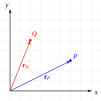
Fig. 8 Representación de la posición.#
En la Figura Fig. 9 se muestra un punto \(P\) y dos sistemas de referencia \(\{0\}\) y \(\framei{1}\). Donde el sistema \(\framei{1}\) se obtiene mediante operaciones de traslación a partir de \(\framei{1}\). La descripción de \(P\) en cada uno de los sistemas de referencia está dada por:
Es más, notará que tal como se muestra en la Figura Fig. 10 las posiciones descritas en ambos sistemas están relacionadas mediante:
Donde \( \vec{r}_{o_1}^0 \) describe la posición del origen de coordenadas del sistema \(\framei{1}\) con respecto al sistema \(\framei{0}\). Se debe tener cuidado con la ecuación (1), puesto que únicamente se cumple cuando los dos sistemas de referencia involucrados son paralelos entre sí, en cualquier otra situación una expresión como esa no será válida.
{kind=link}
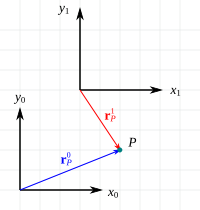
Fig. 9 Representación de la posición.#
{kind=link}
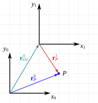
Fig. 10 Representación de la posición.#
Representación de la orientación#
La orientación de un cuerpo rígido en el espacio puede definirse mediante al menos tres parámetros, de su curso de física o estática elemental recordará que habitualmente se hace uso de los cosenos directores para dicha tarea. En cinemática de robots, además de los cosenos directores (agrupados en las matrices de rotación) se hace uso de otros métodos de representación como los ángulos de Euler, los cuaterniones y los pares de rotación.
Para hacer la descripción de la orientación de un sólido rígido, es necesario adherir un sistema de referencia solidario al mismo, el cual nos servirá para realizar la representación de orientación con respecto a otros sistemas de referencia. Así pues, tome en cuenta que en esta sección estudiaremos relaciones de orientación entre sistemas de referencia, pero no pierda de vista que, en última instancia, los eslabones o cuerpos rígidos subyacen a estos sistemas.
Matrices de rotación#
En la Figura Fig. 11 se muestra un sistema \( \{1\} \) que ha sido obtenido a partir de \( \{0\} \) mediante una rotación \(\theta\) alrededor del eje \(z\). Una manera de representar dicha rotación sería simplemente con el parámetro de rotación \(\theta\), pero evidentemente esto no escalaría de manera adecuada para un caso de representación tridimensional.
{kind=link}
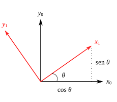
Fig. 11 Un sistema \( \{1\} \) obtenido por rotación a partir de \( \{0\} \)#
Otra opción es decribir las componentes de los ejes del sistema de referencia \( \{1\} \) en el sistema \( \{0\} \), es decir, \( \vec{x}_1^0 \) y \( \vec{y}_1^0 \). En el caso particular del ejemplo de la figura Fig. 11 se puede observar que dichos vectores estarán dados por:
Si estos vectores se acomodan de tal manera que:
Se obtiene un arreglo conocido como matriz de rotación, la cual presenta algunas propiedades particulares que se describirán posteriormente. La matriz \( R_1^0 \) contiene la información necesaria para describir la orientación del sistema \( \{1\} \) con respecto a \(\{0\}\).
Un resultado similar se puede obtener si la descripción del sistema \( \{1\} \) en \( \{0\} \) se hace mediante la proyección escalar de cada uno de los ejes, por ejemplo, \( \vec{x}_1^0 \) y \( \vec{y}_1^0 \) se pueden expresar como:
Recordar que en el caso de vectores unitarios la proyección escalar de un vector sobre el otro resulta simplemente en el coseno del ángulo \(\theta\) que forman entre ellos.
La descripción de los tres ejes coordenados se puede completar considerando que el eje \(z_1\) permanece invariable, apuntando en la misma dirección que el eje \(z_0\), tal como se puede observar en la Figura Fig. 12. Así, es posible ampliar la matriz de la ecuación (2) considerando ahora las componentes en la dirección de \(z\), es decir:
{kind=link}
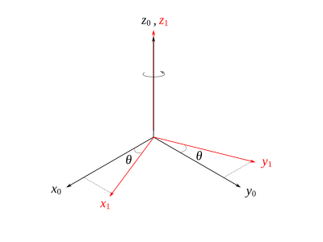
Fig. 12 Un sistema \( \{1\} \) obtenido por una rotación alrededor de \(z\) a partir de \( \{0\} \)#
De manera general, la matriz de rotación anterior nos permite describir la orientación de un sistema con respecto a otro cuando se ha efectuado una rotación \(\theta\) alrededor del eje \(z\). Se puede proceder de una manera muy similar para obtener las matrices de rotación correspondientes a rotaciones alrededor de los ejes \(y\) y \(x\). Las siguientes tres matrices, que denominaremos como matrices de rotación básicas, las utilizaremos para representar las operaciones de rotación con respecto a los tres ejes cartesianos:
Ejemplo. Un sistema de referencia \(\{1\}\) se obtiene a partir de un sistema \(\{0\}\), mediante una rotación de 90° alrededor del eje \(z\). Determine \(R_1^0\).
Solución
La matriz de rotación \(R_1^0\) se calcula sustituyendo \(\theta = 90°\) en la matriz de rotación básica para \(z\), es decir:
Bueno, hasta ahora hemos abordado la manera de realizar la descripción de la orientación del sistema \(\{1\}\) en el sistema \(\{0\}\), pero ¿qué pasa si en su lugar nos interesara la descripción del sistema \(\{0\}\) en el \(\{1\}\)? Naturalmente, podríamos proceder de una manera similar, determinando la proyección de cada uno de los ejes de \(\{0\}\) en \(\{1\}\), y arreglándolos en una matriz de rotación que denominaremos \(R_0^1\), tal como se muestra enseguida:
Algo que podrá notar con facilidad es que la matriz \(R_0^1\) no es más que la transpuesta de la matriz \(R_1^0\). De hecho, \(R_0^1\) es la matriz inversa de \(R_1^0\), pero como veremos posteriormente las matrices de rotación son un tipo especial de matrices que presentan algunas propiedades particulares, como que su inversa es igual a la transpuesta. Veamos un poco más, por ejemplo, refiriéndonos a la Figura Fig. 12, la matriz \(R_1^0\) nos describe cómo ha sido obtenido el sistema \(\{1\}\) a partir del sistema \(\{0\}\), es decir, mediante una rotación \(\theta\) positiva alrededor del eje \(z\). Ahora, pensemos en la relación inversa \(R_0^1\), ¿cómo ha sido obtenido el sistema \(\{0\}\) partir del \(\{1\}\)? La rotación seguiría siendo alrededor del eje \(z\) pero una cantidad \(\theta\) negativa. Podemos verificar que si tomamos la matriz de rotación básica \(R_{z,\theta}\) y sustituimos un ángulo \(-\theta\), obtendríamos la matriz \(R_0^1\) calculada previamente.
Este resultado lo podemos generalizar. Sean \(\{M\}\) y \(\{N\}\) dos sistemas de referencia que difieren por una rotación (o secuencia de rotaciones), entonces las matrices de rotación que los describen están relacionadas de la siguiente manera:
Algunas propiedades de la matrices de rotación#
Se puede verificar que las filas y columnas de una matriz de rotación son unitarias y mutuamente ortogonales, una matriz con estas características se denomina matriz ortogonal. Sea \(R\) una matriz de rotación, entonces:
\( R^{-1} = R^T \)
\(det(R) = 1\)
Las columnas (y filas) de \(R\) son mutuamente ortogonales.
Cada columna (y fila) de \(R\) es un vector unitario.
Ejemplo. A continuación se muestra una matriz de rotación \(R\), compruebe que sus columnas son mutuamente ortogonales.
Solución:
Recordar que dos vectores son ortogonales si el producto escalar es cero. Verificando la primera y segunda columna, se tiene:
Para la primera y tercera:
Para la segunda y tercera:
Se verifica entonces que las columnas de R son mutuamente ortogonales.
Ejemplo. Para la matriz de rotación \(R_{x,\theta}\) muestre que el determinante es 1 y que todas sus filas y columnas son vectores unitarios.
Solución:
La matriz de rotación \( R_{x,\theta} \) está dada por:
Para calcular el determinante podemos utilizar la expansión por cofactores en la primera fila, es decir:
Calculamos ahora la magnitud de las columnas de la matriz:
En el caso de la fila y columna 1 es evidente que son vectores unitarios. Para las filas 2 y 3 se puede observar que tendremos cálculos similares a los mostrados para las columnas.
Transformaciones de rotación#
En la Figura Fig. 13 se observa un sólido rígido con forma de prisma rectangular, al cual se le ha adherido un sistema de referencia \( \{1\} \), además, \( \{1\} \) está rotado un ángulo \(\theta\) alrededor de \(z\) con respecto a un sistema base \( \{0\} \). Asumiendo que las dimensiones del prisma son \(a\), \(b\) y \(c\) en las direcciones de \(x_1\), \(y_1\) y \(z_1\), respectivamente, entonces las coordenadas del vertice \(P\) descritas en el sistema \( \{1\} \) están dadas por:
{kind=link}
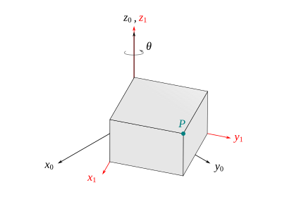
Fig. 13 Transformaciones de rotación#
Las coordenadas de \(P\) en el sistema \( \{0\} \) se pueden obtener mediante la proyección de dicho vector en este sistema, es decir:
Note que la matriz que multiplica al vector \([a,b,c]^T\) es justamente \( R_1^0 \), entonces:
Lo cual implica que la matriz de rotación \( R_1^0 \) además de describir la orientación del sistema \( \{1\} \) con respecto al sistema \( \{0\} \), sirve también para realizar transformaciones de coordenadas de un sistema a otro.
Ejemplo. El sistema \( \{1\} \) está rotado 90° alrededor del eje \(z\) con respecto a \( \{0\} \), se sabe que las coordenadas del punto \(Q\) dadas en el sistema \( \{1\} \) son \( \vec{r}_Q^1 = [10,5,0]^T \), calcule las coordenadas del punto \(Q\) en el sistema \( \{0\} \).
{kind=link}
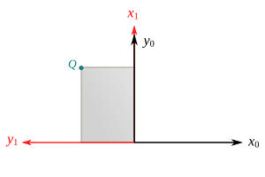
Fig. 14 .#
Solución:
La matriz de rotación \( R_1^0 \) que describe la orientación del sistema \( \{1\} \) respecto a \( \{0\} \) está dada por:
Entonces:
En este caso en particular se puede determinar la validez de lo anterior mediante inspección.
Transformaciones de similitud#
Un sistema de referencia está definido por un conjunto de vectores base, por ejemplo, vectores unitarios a lo largo de los tres ejes de coordenadas. Esto significa que una matriz de rotación como transformación de coordenadas también puede considerarse como la definición de un cambio de base de un sistema a otro. La representación matricial de una transformación lineal general se transforma de un sistema a otro mediante la denominada transformación de similitud. Por ejemplo, sea \(A\) la matriz que representa una transformación lineal en el sistema \(\{0\}\), y sea \(B\) la representación matricial de la misma transformación lineal pero en el sistema \(\{1\}\), entonces \(A\) y \(B\) están relacionadas de la siguiente manera:
Donde \(R_1^0\) es una matriz de transformación de coordenadas entre los sistemas \(\{1\}\) y \(\{0\}\). En particular, si \(B\) es una rotación, entonces también lo es \(A\) y, por lo tanto, el uso de transformaciones de similitud nos permite expresar la misma rotación fácilmente con respecto a diferentes sistemas de referencia.
Composición de las rotaciones#
Consideremos que se tienen tres sistemas de referencia \(\{0\}\), \(\{1\}\) y \(\{2\}\) (ver Figura Fig. 15), y sabiendo que el sistema \(\{1\}\) ha sido obtenido mediante una rotación \(\theta\) a partir del sistema \(\{0\}\), y que \(\{2\}\) ha sido obtenido mediante una rotación \(\phi\) a partir de \(\{1\}\).
{kind=link}
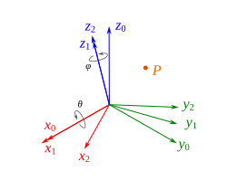
Fig. 15 Composición de rotaciones#
De acuerdo con lo que sabemos de transformaciones de coordenadas, se pueden escribir las siguientes expresiones para la posición del punto \(P\):
Si sustituimos la ecuación (5) en (4) resulta que:
De las ecuaciones (6) y (7) es sencillo notar que necesariamente:
La ecuación (8) describe la ley de composición para transformaciones de rotación. Se puede entender de la siguiente manera: si queremos describir las coordenadas del punto \(P\) en el sistema de referencia \(\framei{0}\) a partir de su representación en \(\framei{2}\), entonces primero podemos describirlo en el sistema \(\framei{1}\) utilizando la matriz \(R_2^1\) y luego transformarlo al sistema \(\framei{0}\) utilizando la matriz \(R_1^0\).
Note que la segunda rotación de la Figura Fig. 15 ha sido realizada con respecto a un sistema \(\{1\}\) previamente obtenido mediante otra rotación a partir de un sistema \(\{0\}\). Este tipo de transformación se dice que se ha efectuado con respecto a un sistema móvil (o típicamente también se denominan rotaciones con respecto al sistema actual, o rotaciones intrínsecas). Cuando las rotaciones sean efectuadas de esta manera, las matrices de rotación que representan las rotaciones se deben postmultiplicar en el orden en que son realizadas. Si las rotaciones se realizan con respecto a un sistema fijo, el orden de composición descrito anteriormente ya no funciona, ahora el orden debe invertirse, es decir, si las transformaciones de rotación se realizan con respecto a un sistema fijo entonces las matrices de rotación correspondientes deberán premultiplicarse.
En la Figura Fig. 16 se puede observar un sólido en forma cúbica al cual se le ha adherido un sistema de referencia \(\{1\}\) que se mueve junto con este. Inicialmente suponemos que el sistema \(\{1\}\) coincide con un sistema fijo \(\{0\}\). Como se indica, se realizan dos rotaciones con respecto a los ejes del sistema móvil, es decir, el sistema cuya orientación cambia después de haber efectuado la rotación. Así, la matriz \(R_1^0\) que describe la orientación del sistema \(\{1\}\) con respecto al sistema \(\{0\}\), después de haber efectuado ambas rotaciones está dada por:
Note que en este caso las matrices de rotación se multiplican en el orden en que son realizadas las transformaciones, escribiéndolas de izquierda a derecha (postmultiplicando).
{kind=link}
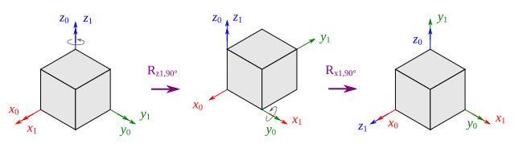
Fig. 16 Composición de rotaciones#
Ahora, en la Figura Fig. 17 puede observar una situación similar en cuanto a los ejes con respecto a los cuáles se efectúan las rotaciones, salvo que en este caso son con respecto al sistema fijo \(\{0\}\). Aquí, la descripción \(R_1^0\), después de haber efectuado ambas rotaciones, se calcula premultiplicando las matrices de rotación involucradas, escribiéndolas de derecha a izquierda, es decir:
{kind=link}
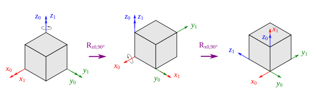
Fig. 17 Composición de rotaciones#
La validez de ambas composiciones se puede verificar en este caso directamente por inspección de los esquemas mostrados.
Ejemplo. Un sistema \(\{1\}\) se obtiene a partir de un sistema \(\{0\}\) mediante la siguiente secuencia de rotaciones con respecto al sistema móvil: una rotación de 45° con respecto al eje \(y\), seguida de una rotación alrededor del eje \(z\) de 60°. Determine \(R_1^0\).
Solución:
Dado que las rotaciones son efectuadas con respecto al sistema móvil, entonces las matrices se postmultiplican, es decir:
Todo este razonamiento previo de composición de rotaciones con respecto a un sistema móvil se puede extender a cualquier cantidad de sistemas de referencia, por ejemplo, suponga que se tienen los sistemas de referencia \(\framei{0}\), \(\framei{1}\), \(\framei{2}\), \(\cdots\), \(\framei{n}\), que difieren únicamente por rotaciones, se puede verificar de forma muy simple que las siguientes expresiones son válidas:
O bien:
Este ecuación muestra que la orientación de un sistema \(\framei{n}\) la podemos expresar en un sistema \(\framei{0}\) mediante la composición de transformaciones de rotación intermedias, algo que nos será muy útil para la cinemática de manipuladores, puesto que lo que haremos será colocar sistemas de referencia a cada uno de los eslabones y luego realizar las descripciones de posición y orientación entre eslabones consecutivos.
Ejemplo. Se tienen tres sistemas de referencia \(\framei{0}\), \(\framei{1}\) y \(\framei{2}\), y se conocen las siguientes matrices de rotación:
Calcule \(R_2^0\) y \(R_3^0\).
Solución:
La matriz \(R_2^0\) se puede obtener multiplicando \(R_1^0\) por \(R_2^1\), es decir:
Para \(R_3^0\) podemos multiplicar la \(R_2^0\) obtenida previamente por \(R_3^2\), es decir:
Ángulos de Euler#
Las matrices de rotación proporcionan una descripción redundante de la orientación de un sistema de referencia con respecto a otro, puesto que sus nueve elementos no son independientes entre sí, debido a las restricciones de ortogonalidad entre sus columnas y el hecho de que cada columna es un vector unitario. De esto se desprenden seis restricciones dadas por las ecuaciones (9) y (10).
Lo anterior implica que se requieren tres parámetros independientes para representar completamente la orientación de un cuerpo rígido en el espacio. Una representación en términos de tres parámetros independientes se dice que es una representación mínima.
Un método común para especificar la orientación de un sistema de referencia móvil con respecto a uno fijo, en términos de tres cantidades independientes \((\phi, \theta, \psi)\) son los llamados ángulos de Euler, los cuales corresponden a una secuencia de tres rotaciones en un orden determinado con respecto a un sistema de referencia fijo o móvil. Podemos hacer distinción entre:
Secuencia de rotaciones intrínsecas (Ángulos de Euler clásicos – \(zxz\), \(zyz\), \(yzy\), \(yxy\), \(xyx\), \(xzx\))
Secuencia de rotaciones extrínsecas (Ángulos de Tait-Bryan - \(xyz\), \(yzx\), \(zxy\), \(xzy\), \(zyx\), \(yxz\))
Las rotaciones intrínsecas son aquellas realizadas con respecto al sistema móvil, y las extrínsecas aquellas realizadas con respecto al sistema fijo. Como se observa, existen varias secuencias de rotaciones que darían una representación conveniente de la orientación, pero aquí se revisarán algunos casos particulares y de uso común dentro de la robótica.
Ángulos de Euler ZXZ#
En este caso, a partir de un sistema fijo se puede obtener otro sistema de referencia en cualquier orientación mediante tres rotaciones sucesivas alrededor del sistema móvil, a saber:
Una rotación de un ángulo \(\phi\) alrededor del eje \(z\)
Una rotación de un ángulo \(\theta\) alrededor del eje \(x\)
Una rotación de un ángulo \(\psi\) alrededor del eje \(z\)
Lo cual conduce a:
Evidentemente, calcular la matriz de rotación correspondiente a un conjunto de ángulos de Euler es una tarea que puede realizarse sin problemas, puesto que implica únicamente multiplicaciones matriciales en el orden indicado. Un problema de naturaleza menos trivial es que a partir de una matriz de rotación \(R\) se obtenga el conjunto de ángulos de Euler ZXZ equivalentes, de tal forma que:
donde:
Siendo \(R\), naturalmente, una matriz cuyos valores son todos conocidos. Para resolver este problema se considerarán tres casos.
Caso I
Si \(r_{13}\) y \(r_{23}\) no son ambas cero, de acuerdo con (12) implica necesariamente que \(s\theta \neq 0\), y consecuentemente que \(r_{13}\) y \(r_{23}\) no son ambas cero. Lo anterior conduce a que \(r_{33} \neq \pm 1 \), entonces \(c\theta = r_{33}\) y \(s\theta = \pm\sqrt{1-r_{33}^2} \), lo cual implica dos posibles soluciones para \(\theta\):
Si se toma la solución para \(\theta\) dada por (13), entonces:
Si se toma la solución para \(\theta\) dada por (14), entonces:
Caso II
Si \(r_{13} = r_{23} = 0\), dado que \(R\) es ortogonal implica que \(r_{33}=\pm 1\) y \(r_{31}=r_{32}=0\), entonces \(R\) tendrá la forma:
Si \(r_{33}=1\) entonces, \(\cos\theta=1\) y \(\sin\theta=0\), lo cual implica necesariamente que \(\theta = 0°\). De lo anterior se tiene:
Lo anterior implica una cantidad infinita de soluciones. Por convención se asume \(\psi = 0°\) y entonces:
Caso III
De manera similar al caso anterior, si \(r_{33}=-1\) entonces, \(\cos\theta=-1\) y \(\sin\theta=0\), lo cual implica necesariamente que \(\theta = 180°\). De lo anterior se tiene:
Lo anterior implica una cantidad infinita de soluciones. Por convención se asume \(\psi = 0°\) y entonces:
Ejemplo. Para la siguiente matriz de rotación, calcule el conjunto de ángulos de Euler ZXZ equivalente.
Solución:
Dado que \(r_{33} \neq \pm 1\) podemos utilizar el conjunto de ecuaciones para el primer caso, es decir:
Por lo tanto:
Ejemplo. Para la siguiente matriz de rotación, calcule el conjunto de ángulos de Euler ZXZ equivalente.
Solución:
Dado que \(r_{33} = 1\) podemos utilizar el conjunto de ecuaciones para el segundo caso, es decir:
Entonces, el conjunto de ángulos de Euler ZXZ equivalentes es
Ejemplo. Calcule los ángulos de Euler ZXZ que son equivalentes a la matriz de rotación que resulta de la siguiente secuencia de rotaciones alrededor de los ejes móviles: una rotación de 60° alrededor del eje \(z\) seguida de una rotación de 135° alrededor del eje \(y\).
Solución:
Para resolver este problema lo primero que debemos hacer es calcular la matriz de rotación que resulta de efectuar las dos operaciones indicadas, para ello multiplicamos las matrices de rotación en el orden correspondiente, es decir:
Dado que \(r_{33} \neq \pm 1\) podemos utilizar el conjunto de ecuaciones para el primer caso, es decir:
Ángulos de Euler ZYZ#
Los ángulos de Euler ZYZ nos permiten describir la orientación de un cuerpo rígido mediante tres rotaciones sucesivas alrededor del sistema móvil, en el siguiente orden:
Una rotación de un ángulo \(\phi\) alrededor del eje \(z\)
Una rotación de un ángulo \(\theta\) alrededor del eje \(y\)
Una rotación de un ángulo \(\psi\) alrededor del eje \(z\)
La secuencia de rotaciones anteriores nos conduce a la siguiente matriz de rotación equivalente:
Al igual que con la secuencia ZXZ, podemos determinar a partir de una matriz de rotación \(R\) los ángulos de Euler equivalente resolviendo la ecuación matricial:
donde:
Siendo \(R\), naturalmente, una matriz cuyos valores son todos conocidos. Para resolver este problema se considerarán tres casos.
Caso I
Si \(r_{13}\) y \(r_{23}\) no son ambas cero, de acuerdo con (16) implica necesariamente que \(s\theta \neq 0\), y consecuentemente que \(r_{13}\) y \(r_{23}\) no son ambas cero. Lo anterior conduce a que \(r_{33} \neq \pm 1 \), entonces \(c\theta = r_{33}\) y \(s\theta = \pm\sqrt{1-r_{33}^2} \), lo cual implica dos posibles soluciones para \(\theta\):
Si se toma la solución para \(\theta\) dada por (17), entonces:
Si se toma la solución para \(\theta\) dada por (18), entonces:
Caso II
Si \(r_{13} = r_{23} = 0\), dado que \(R\) es ortogonal implica que \(r_{33}=\pm 1\) y \(r_{31}=r_{32}=0\), entonces \(R\) tendrá la forma:
Si \(r_{33}=1\) entonces, \(\cos\theta=1\) y \(\sin\theta=0\), lo cual implica necesariamente que \(\theta = 0°\). De lo anterior se tiene:
Lo anterior implica una cantidad infinita de soluciones. Por convención se asume \(\psi = 0°\) y entonces:
Caso III
De manera similar al caso anterior, si \(r_{33}=-1\) entonces, \(\cos\theta=-1\) y \(\sin\theta=0\), lo cual implica necesariamente que \(\theta = 180°\). De lo anterior se tiene:
Lo anterior implica una cantidad infinita de soluciones. Por convención se asume \(\psi = 0°\) y entonces:
Ángulos Roll-Pitch-Yaw#
Representación eje-ángulo#
Cuaterniones#
Matrices de transformación homogénea#
En las secciones anteriores se ha visto cómo representar la posición y orientación, de forma separada; en esta sección conoceremos una herramienta matemática que nos permite representar de manera conjunta la posición y la orientación de un cuerpo rígido.
En la figura Fig. 18 podemos observar un sistema de referencia móvil \(\framei{1}\) adherido a un sólido rígido y un sistema de referencia \(\framei{0}\) fijo, es sencillo identificar que además de la orientación hay también una variación en la posición de los sistemas de referencia. Un punto \(P\) adherido al sólido rígido se puede describir en el sistema de referencia \(\framei{1}\) mediante el vector de posición \( \vec{r}_{P/o_1}^1 \) mostrado, además, la posición del origen del sistema de referencia \( \framei{1} \) se puede describir en \(\framei{0}\) mediante el vector \( \vec{r}_{o_1}^0 \), si quisiéramos determinar la posición de \(P\) en \(\framei{0}\) entonces podríamos hacerlo de la siguiente manera:
{kind=link}
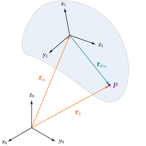
Fig. 18 Movimiento de sólido rígido#
Lo cual podríamos verlo como una suma de vectores, sin embargo, es importante recordar que no es posible sumar directamente dos vectores que están definidos con respecto a sistemas de referencia con diferente orientación. De tal modo que se debe expresar primeramente a \(\vec{r}_{P/o_1}^1\) en el sistema \(\{0\}\), lo cual se logra con la multiplicación correspondiente por la matriz de rotación: \(R_1^0 \vec{r}_{P/o_1}^1\), para poder sumarlo a \(\vec{r}_{o_1}^0 \). Aquí, \(R_1^0\) corresponde a la matriz de rotación que describe la orientación del sistema \(\framei{1}\) con respecto a \(\framei{0}.\)
La ecuación (19) se puede expresar de manera más compacta si introducimos una matriz de transformación que opere directamente sobre un vector y transforme sus coordenadas de un sistema a otro, una matriz de este tipo se denomina matriz de transformación homogénea y tiene la forma que a continuación se muestra:
Donde \(R\) es una matriz de rotación de \(3 \times 3\), \(\vec{r}\) es un vector columna de tres elementos y \(\vec{0} = \sbr{0, 0, 0} \). Lo anterior implica que \(H\) es una matriz de \(4 \times 4\) y por lo tanto no puede multiplicarse directamente por un vector de posición de tres componentes, así pues, para poder efectuar la transformación de coordenadas es necesario agregar una coordenada adicional a cada vector, usualmente se agrega un uno, de tal forma que dado un vector \(\vec{r}_P\):
Al agregarle la coordenada adicional quedaría como:
Un vector como \(\vec{\tilde{r}}_P\) se dice que está expresado en coordenadas homogéneas.
Siguiendo con nuestro análisis, la matriz de transformación homogénea que transforma \(\vec{r}_{P/o_1}^1\) en \(\vec{r}_P^0\) está dada por:
Así pues, la ecuación (19) se puede escribir de forma matricial de la siguiente manera:
Es sencillo notar la equivalencia entre ambas ecuaciones. Aquí utilizamos la tilde para distinguir a un vector en coordenadas homogéneas, sin embargo, por cuestiones de legibilidad y comodidad, en lo subsiguiente prescindiremos de ella y denotaremos a los vectores en coordenadas homogéneas de la misma forma que el resto, se asume que el lector podrá distinguir por el contexto si se está trabajando con un vector en coordenadas homogéneas. Además, por comodidad muchas veces se utilizará la notación \(\vec{r}_P^1\) para denotar a \(\vec{r}_{P/o_1}^1\), en el entendido que en general mediremos la posición de un punto con respecto al origen del sistema de referencia que usamos para describirlo; así pues, una versión simplificada de (20) se escribirá usualmente como:
Matrices de transformación homogéneas básicas#
Como ya sabemos, un cuerpo rígido que se mueve en el espacio experimenta traslación y rotación, por lo cual sus movimientos y su localización se puede definir completamente mediante tres operaciones básicas de traslación y tres de rotación, cada una en la dirección de los ejes de un sistema de referencia.
Un conjunto de matrices de transformación homogénea que representan movimientos básicos de traslación y rotación alrededor de los ejes \(x\), \(y\), \(z\) está dado por:
Composición de las matrices de transformación homogénea#
Supongamos ahora que tenemos tres sistemas de referencia: \(\framei{0}\), \(\framei{1}\) y \(\framei{2}\), que difieren por rotaciones y traslaciones. Consideremos, además, que se tiene un punto \(P\) tal como se muestra en la Figura Fig. 19; es sencillo observar que las coordenadas de \(P\) descritas en el sistema \(\framei{1}\) están dadas por:
{kind=link}
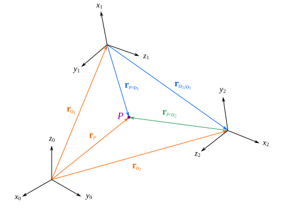
Fig. 19 Movimiento de sólido rígido#
De la Figura Fig. 19 podemos observar también que la descripción de las coordenadas de \(P\) en el sistema \( \framei{0} \) está dada por:
Si sustituimos la ecuación (22) en la (23) se tiene que:
Observe que esta ecuación transforma las coordenadas de \(P\) del sistema \(\framei{2}\) al sistema \(\framei{0}\). Esta ecuación se puede escribir también utilizando la forma matricial. De acuerdo con lo visto previamente sabemos que:
Se puede verificar además que:
Observe que si multiplicamos esta matriz resultante por el vector \(\vec{r}_P^2\) en coordenadas homogéneas, tendremos a \(\vec{r}_P^0\), tal como lo describe la ecuación (24):
Así pues, podemos denotar a esta matriz de transformación homogénea como \(H_2^0\), esto implica que:
Esta es nuestra regla de composición básica para movimientos de rotación y traslación representados mediante matrices de transformación homogénea, y realizados con respecto a un sistema móvil. Observe que esta regla de composición es análoga a la de las matrices de rotación, de hecho, para transformaciones realizadas con respecto a un sistema fijo las matrices de transformación también se premultiplican.
Cuando las transformaciones son sólo traslaciones, en el resultado final no influye el orden de las mismas, y consecuentemente el orden de acomodo de las matrices no es restrictivo, naturalmente se prefiere escribirlas en el orden que son dadas de acuerdo con si son realizadas con respecto a un sistema fijo o móvil. Por ejemplo suponga que un sistema \( \{B\} \) se obtiene del sistema \( \{A\} \) mediante una traslación \(a\) en \(x\), seguida de una traslación \(b\) en \(y\), y finalmente una traslación \(c\) en \(z\), la matriz de transformación homogénea que representa dichas operaciones está dada por:
Se obtendría el mismo resultado si cualquiera de las matrices se coloca en otra posición.
Ejemplo. Calcule la matriz de transformación homogénea \( H_1^0 \).
{kind=link}
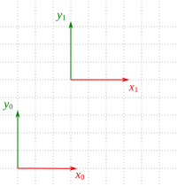
Fig. 20 .#
Solución:
De la Figura Fig. 20 se observa que el sistema \(\{1\}\) puede ser obtenido a partir de \(\{0\}\) mediante una traslación de 3 unidades en \(x\) y 5 unidades en \(y\). Así, la matriz de transformación homogénea que representa la descripción de dicho sistema está dada por:
Ejemplo. Calcule la matriz de transformación homogénea \( H_1^0 \).
{kind=link}
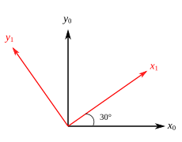
Fig. 21 .#
Solución:
El esquema de la figura Fig. 21 muestra un sistema \(\{1\}\) obtenido de \(\{0\}\) mediante una rotación alrededor de \(z\) de 30°. La matriz de transformación homogénea que describe dicha transformación es la de rotación alrededor de \(z\), sustituyendo, claro está, el valor correspondiente del ángulo, de esa manera:
Ejemplo. Calcula la matriz de transformación homogénea \(H_1^0\).
{kind=link}
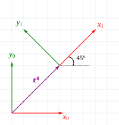
Fig. 22 .#
Solución:
En la figura Fig. 22 se observa un sistema \(\{1\}\) que puede obtenerse de \(\{0\}\) mediante una serie de traslaciones y rotaciones. De manera específica, utilizando los ejes móviles, se pueden trasladar 4 unidades en \(x\) y en \(y\), y posteriormente una rotación alrededor de \(z\) de 45°, estas transformaciones se pueden expresar en forma de un producto matricial como sigue:
Ejemplo. En la Figura Fig. 23 se observa una barra en rotación pura, la cual tiene adherido en su extremo un sistema móvil \(\{1\}\) y un sistema fijo \(\{0\}\) en su base. El sistema \(\{1\}\) está definido de tal manera que el eje \( x_1 \) apunta en la dirección de la línea que va desde el centro de rotación hasta su extremo. Calcule la matriz de transformación homogénea que describe la posición y orientación de \(\framei{1}\) en \( \framei{0} \).
{kind=link}
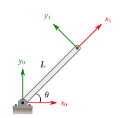
Fig. 23 .#
Solución:
Se observa que el sistema \(\{1\}\) se puede obtener de \( \{0\} \) mediante una serie de traslaciones y rotaciones. Por ejemplo, si las transformaciones se hacen respecto a un sistema móvil, entonces una secuencia posible sería la siguiente:
Traslación en \(x\) de \(L \cos\theta\)
Traslación en \(y\) de \(L \sin\theta\)
Rotación alrededor de \(z\) un ángulo \(\theta\)
Lo cual conduce a:
Pero claro está que no es la única manera, si se ejecuta la siguiente secuencia alrededor de los ejes móviles:
Rotación alrededor de \(z\) un ángulo \(\theta\).
Traslación en \(x\) de \(L\).
Se tiene:
Lo cual conduce en efecto a la misma descripción obtenida con anterioridad. De igual manera se pueden establecer transformaciones con respecto a los ejes fijos que produzcan el mismo resultado.
Ejemplo. En la figura Fig. 24 se observa una placa plana rectangular de las dimensiones indicadas, en cuyas esquinas se colocan algunos sistemas de referencia. Calcule \(H_1^0\), \( H_2^1 \), \( H_2^0 \) y \( H_3^2 \).
{kind=link}
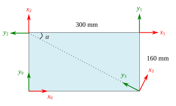
Fig. 24 Una placa plana con múltiples sistemas de referencia#
Solución:
Descripción de \(\{1\}\) con respecto a \(\{0\}\)
Como se observa en la figura Fig. 24, el sistema \(\{1\}\) está trasladado 300 mm en la dirección de \(x\) y 160 mm en la dirección de \(y\). Por lo tanto, el producto matricial que proporciona la matriz de transformación total está dado por:
Observe que la matriz resultante concuerda con lo esquematizado, \( H_1^0 \) indica que el origen de coordenadas del sistema \(\{1\}\) está en las coordenadas (300,160) y en la misma orientación con respecto a \(\{0\}\).
Descripción de \(\{2\}\) con respecto a \(\{1\}\)
De acuerdo a lo mostrado en la figura Fig. 24 el sistema \(\{2\}\) puede obtenerse a partir de \(\{1\}\) mediante una traslación de 300 mm en la dirección negativa de \(x\) y enseguida una rotación de 90° alrededor de \(z\). Con lo anterior se tiene:
Observe que de acuerdo a \( T_2^1 \) el eje \(X_2\) apunta en la dirección positiva del eje \( Y_1 \), y que el eje \( Y_2 \) apunta en la dirección negativa del eje \( X_1 \), lo cual concuerda con el esquema de referencia. Es más, la posición del origen de \(\{2\}\) respecto a \(\{1\}\) es (-300,0), misma que puede corroborarse en la Figura Fig. 24.
Descripción de \(\{2\}\) con respecto a \(\{0\}\)
Como se observa en la figura Fig. 24 el sistema \(\{2\}\) puede obtenerse de \(\{0\}\) mediante una traslación de 160 mm en la dirección de \(y\), y una posterior rotación de 90° alrededor de \(z\).
La matriz \( H_2^0 \) también puede obtenerse mediante la composición de matrices de transformación, bajo la consideración de que previamente se han calculado \( H_1^0 \) y \( H_2^1 \), así:
Descripción de \(\{3\}\) con respecto a \(\{2\}\)
De la figura Fig. 24 se puede identificar que \(\{3\}\) se puede obtener de \(\{2\}\) mediante una rotación horaria de un ángulo \(\alpha\) en la dirección de \(z\), seguida de una traslación de \( d_r \) en la dirección negativa de \(y\), siendo \( d_r \) la longitud de la diagonal del rectángulo, entonces se tiene:
Como es de suponer, además de las series de transformaciones descritas en los puntos anteriores, existen una cantidad considerable de posibles secuencias de transformaciones. Por lo anterior, usualmente en cinemática de manipuladores se establecen ciertos criterios para el establecimiento de los sistemas de referencia así como de las transformaciones a realizar, esto es algo que se verá en el siguiente capítulo.
Problemas#
Describe las coordenadas del punto \(Q\) en cada uno de los sistemas de referencia mostrados en la Figura Fig. 25.
{kind=link}
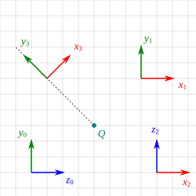
Fig. 25 .#
Las coordenadas de un punto \(P\) en un sistema de referencia \(\{A\}\) están dadas por \( \vec{r}_P^A = [5,10,3]^T \). Si se sabe que un sistema de referencia \(\{B\}\) se obtiene a partir de \(\{A\}\) mediante una traslación en \(x\) de 10 unidades y una traslación en \(z\) de 5 unidades, calcula las coordenadas del punto \(P\) en el sistema de referencia \(\{B\}\).
Muestre que la distancia entre dos puntos no cambia con la rotación, es decir, que \(\lVert \vec{p_1} - \vec{p_2} \rVert = \lVert R\vec{p_1} - R\vec{p_2} \rVert\). Donde \(R\) es una matriz de rotación y \(\vec{p}_1\) y \( \vec{p}_2 \) dos vectores de posición.
Muestre que la rotación efectuada a un vector no altera su magnitud, es decir que \(\lVert \vec{p} \rVert = \lVert R\vec{p} \rVert \), donde \(R\) es una matriz de rotación.
Muestre que para una matriz de rotación se cumple la propiedad \(R^{-1} = R^T \). Utilice la matriz de rotación alrededor de \(x\) para comprobarlo. Suponga un ángulo \(\theta\) de rotación y proceda mediante un método convencional para el cálculo de la matriz inversa y compare con lo obtenido transponiendo la matriz de rotación.
Un vector \( \vec{P} = [0,10,0]^T \) se rota alrededor del eje \(x\) un ángulo de 90° y enseguida se rota alrededor del eje \(y\) un ángulo de 180°, determine las componentes del vector transformado. Esquematice el vector inicial y el transformado.
En la Figura Fig. 26 se muestra un cuerpo rígido con forma de cubo y cuyas aristas miden 200 mm. Al sólido se le adhiere un sistema móvil \( \{1\} \) que inicialmente coincide con el sistema fijo \( \{0\} \) . Calcule lo siguiente:
Las coordenadas del punto \(Q\) después de una rotación de 30° alrededor del eje \(x_0\), seguida por una rotación de 225° alrededor del eje \(y_1\).
Las coordenadas del punto \(Q\) después de una rotación de 45° alrededor del eje \(y_1\), seguida por una rotación de 60° alrededor del eje \(z_0\).
Las coordenadas del punto \(Q\) después de la rotación de 135° alrededor del eje \(z_0\), seguida por una rotación de 90° alrededor del eje \(x_1\) y posteriormente una rotación de 60° alrededor del eje \(x_0\).
{kind=link}
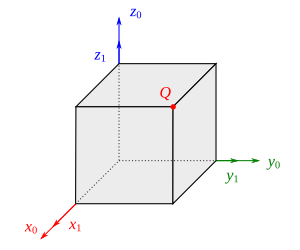
Fig. 26 .#
Suponga que tres sistemas de referencia \(\{A\}\), \(\{B\}\) y \(\{C\}\) están dados y que además:
Calcule \(R_B^C\).
La siguiente matriz de rotación corresponde a una secuencia de rotaciones alrededor de un sistema móvil:
Un ángulo \(\alpha\) alrededor del eje \(x\)
Un ángulo \(\beta\) alrededor del eje \(y\)
Un ángulo \(\gamma\) alrededor del eje \(z\)
Calcule \(\alpha\), \(\beta\) y \(\gamma\).
Se tienen cuatro sistemas de referencia {0}, {1}, {2} y {3}, de los cuales se conocen algunas relaciones de orientación dadas por las siguientes matrices de rotación:
Calcule las matrices \(R_3^0\) y \(R_1^2\).
El sistema de referencia \( \{B\} \) se obtiene a partir del \( \{A\} \) mediante una secuencia de rotaciones, a saber:
45° alrededor del eje \(z\) móvil
30° alrededor del eje \(x\) fijo
135° alrededor del eje \(y\) móvil
60° alrededor del eje \(z\) fijo
Calcule el conjunto de ángulos de Euler ZXZ que describe la orientación de \( \{B\} \) con respecto de \( \{A\} \).
Calcule el conjunto de ángulos de Euler ZXZ que son equivalentes a la siguiente matriz de rotación.
Calcule el conjunto de ángulos de Euler ZXZ que son equivalentes a la siguiente matriz de rotación.
Calcule el conjunto de ángulos de Euler ZXZ que son equivalentes a la siguiente matriz de rotación.
Calcule la matriz de rotación equivalente al conjunto de ángulos de Euler ZXZ \( \rbr{45°, 60°, 135°} \).
Calcule la matriz de rotación equivalente al conjunto de ángulos de Euler ZYZ \( \rbr{90°, -90°, 30°} \).
Un sistema de referencia \(\{B\}\) está trasladado 5 unidades en \(x\), 4 unidades en \(y\) y -10 unidades en \(z\) con respecto al sistema \(\{A\}\). Se sabe que las coordenadas de un punto \(P\) descritas en el sistema \(\{B\}\) son \(\vec{P}^B = [2,3,-5]^T\), calcule \(\vec{P}^A\).